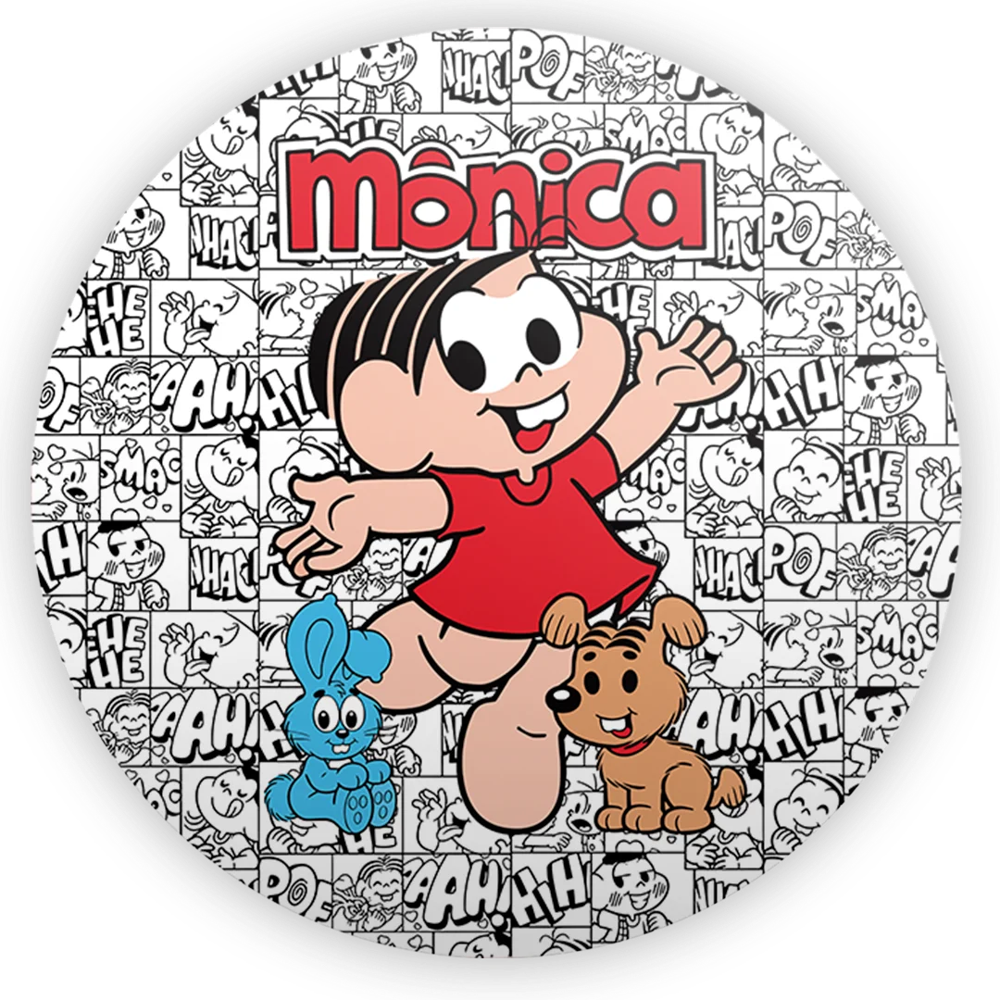
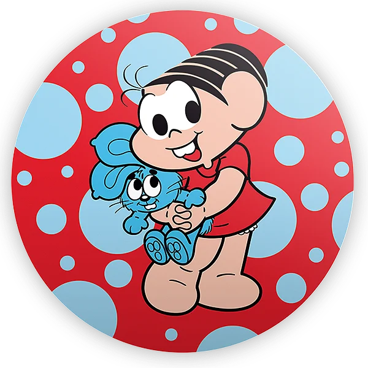
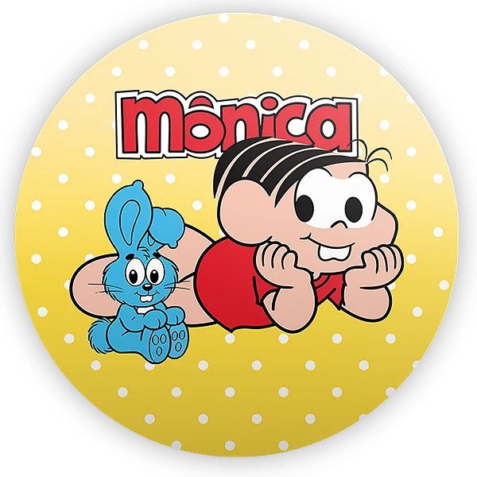

Mônica
A personagem forte, dona do Sansão e o coração da turma.

Sobre a Mônica
Mônica é uma personagem de quadrinhos brasileira criada por Mauricio de Sousa em 1963. Inspirada em Mônica Sousa, ela é conhecida por sua personalidade forte, seu famoso coelho de pelúcia chamado Sansão e pelo vestido vermelho.
- Criação: 1963 por Mauricio de Sousa
- Traço marcante: Vestido vermelho e Sansão
- Personalidade: Determinada, corajosa e justa
Galeria



Curiosidades
- Mônica ganhou revista própria em 1970.
- Sansão é um dos elementos mais icônicos da personagem.
- A personagem gerou filmes, séries e produtos mundialmente.